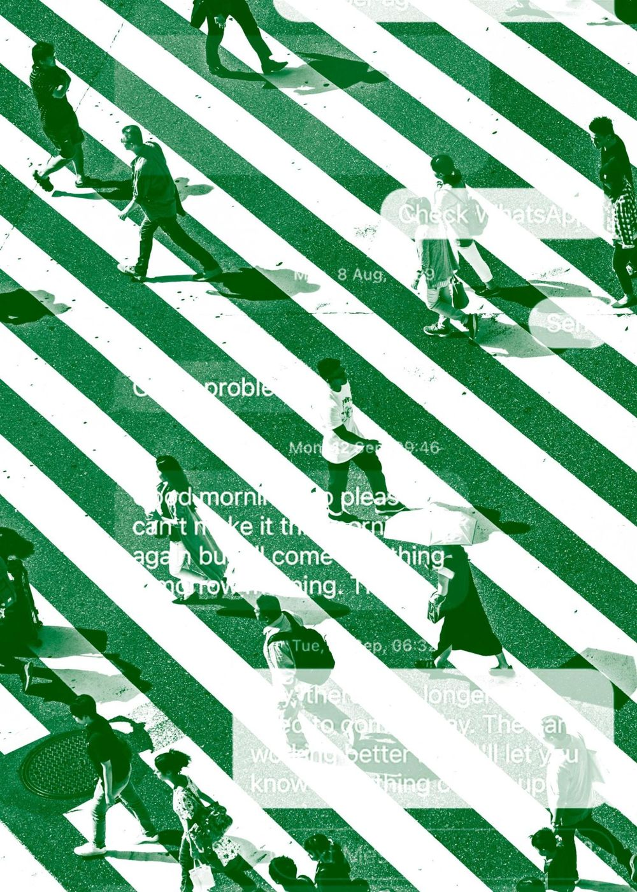

Nothing is working. Everyone is pretending it is.
We measure the one behavior nobody has measured, then build the mechanism that fixes it. One open file: a $40,000 measurement, sitting on top of $1.2B–$8.3B a year.
If that lands, the rest of this site will make sense fast. If it doesn't, we're not for you, and that's by design.
BEHAVIORAL_INFRASTRUCTURE // AUSTIN, TX
Three problems we are working on right now.
Each file becomes a measurement, then a mechanism, and, when it earns it, a company.
AI-written filings are flooding the courts.
Courts grade themselves on how fast they clear cases, so the flood doesn't show up in their numbers. We built the measurement that catches what clearance rates miss.
READ_AXL-WP-07 ->
A $40,000 measurement, sitting on top of billions.
The zipper merge fails for one unmeasured behavioral reason. Measuring it unlocks a bracketed $1.2B–$8.3B in annually recoverable loss. Nobody has measured it.
READ_AXL-WP-02 ->Marketing money that leaves something behind.
Michelin's own interest put a food-program vehicle on the road, and it outlived the campaign that paid for it. We design brand spend to do that on purpose.
01_COMMERCIAL ->PRINCIPAL: Imran Hafiz · Seven years at VICE and VIRTUE, 2013 to 2020 · Youngest recipient of the City of Phoenix's MLK Living the Dream award
Most people privately stopped believing the official story years ago. Each assumes everyone else still believes, so everyone keeps performing.
You cannot message your way out of that. Mechanisms can: rules, defaults, and incentives that make the honest move the easy move. We build them. The full argument is in the research.
"The next revolution will be psychological, not technological."
— RORY SUTHERLAND, VICE CHAIRMAN, OGILVY UK · TEDxAMSTERDAM, 2012
AUX LABS IS OUR ANSWER.
Y: % OF U.S. ADULTS. X: SURVEY YEAR, 1958–2026. SELECTED VERIFIED READINGS. GOVT = TRUST WASHINGTON TO DO WHAT IS RIGHT "JUST ABOUT ALWAYS / MOST OF THE TIME" (PEW) · PRESS = "GREAT DEAL / FAIR AMOUNT" OF TRUST IN MASS MEDIA (GALLUP) · US = AGREE "MOST PEOPLE CAN BE TRUSTED" (GSS) · BIZ = "GREAT DEAL / QUITE A LOT" OF CONFIDENCE IN BIG BUSINESS (GALLUP) · ADS = RATE ADVERTISING PRACTITIONERS' HONESTY "HIGH / VERY HIGH" (GALLUP).
SOURCES: PEW (GOVERNMENT) · GALLUP (MEDIA) · GSS VIA PEW (EACH OTHER) · GALLUP (BIG BUSINESS) · GALLUP (ADVERTISING) · U.S. SURGEON GENERAL (LONELINESS, 2023)
Imran Hafiz
Principal
At fifteen, Imran Hafiz co-wrote The American Muslim Teenager's Handbook with his mother and sister, the first book written by and for American Muslim youth, after 9/11 made him a target at school. In 2008 he became the youngest recipient of the City of Phoenix's MLK Living the Dream award, presented by the governor.
Duke, public policy. Then seven years at VICE and VIRTUE, 2013 to 2020, from the team that sent Dennis Rodman to North Korea to Publisher of VIRTUE Intelligence. In March 2020 he left to start The Auxiliary as a civic response to the pandemic: COVID misinformation hackathons, public-health work with public housing in Georgia, and the peer-reviewed Jin-Hafiz Disinformation Index.
The diagnosis is free.
Thirty minutes. Bring the system that's bleeding: a queue, a policy, a schedule, a public that's stopped believing you. We'll tell you where the trust is leaking, what it's costing you, and whether a mechanism can fix it. If we can't help, we'll say so in the first call.
[ BOOK_THE_DIAGNOSIS_CALL ]